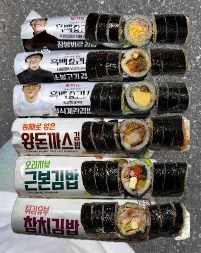

편의점 김밥
일반 분식집
참치,야채 김밥 = 3000~5000원
편의점 김밥 종류여러가지 = 3000원~4000원
삼각김밥 2개에 1800~3600원

편의점 김밥
일반 분식집
참치,야채 김밥 = 3000~5000원
편의점 김밥 종류여러가지 = 3000원~4000원
삼각김밥 2개에 1800~3600원
이건 많이 아닌데 했더니
역시 비추 장난 아니구만ㅋㅋ
편의점 김밥은 바로 들어온거 공항에서 먹었을때 말곤 괜찮았던 적이 없다
추천 비추 비율은 내가 1:1로 맞췄다
? 전혀 아님
지랄 노
최근에 먹은 최고의김밥은 새벽5시에 거제아주조선소 앞 김밥집에서 먹은 김밥한줄이었음, 얼마였는지는 기억이 안나는데 하여튼 거지입장에서 삼사천원에 단무지반찬에 국도 한그릇주는데 진수성찬이 부러웠음
김밥집이 아무리 비싸져도 어디 편의점 김밥을 갖다대 지랄하지마라
편의점 김밥은 차거나 엄청 뜨거움 둘 중 하나라서 옛날부터 별로 먹고 싶지 않더라구
그냥 조금 더 비싸더라도 우리집 앞 김천에서 먹을래